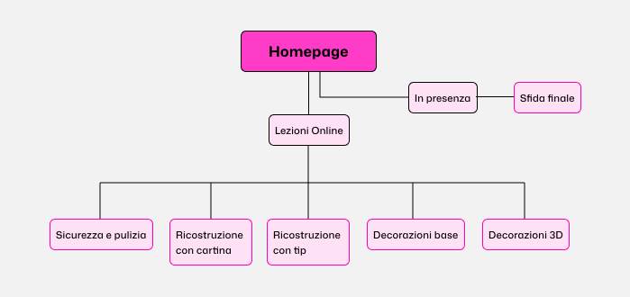
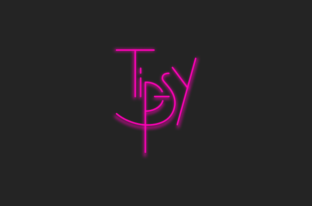

Fiumano Alessandra - esame html - 2026
TIPSY. NAILS ARE CULTURE
Trasformare la nail art da estetica a movimento culturale attraverso un’esperienza mista, tra lezioni online e sfida dal vivo.

- Studente
- Alessandra Fiumanò
- Corso
- ITS Web Design e Strategie Digitali
- Modulo
- UI/UX Design
- Scuola e anno
- ITS Academy I-CREA, CFP Bauer Milano · 2026
CONCEPT
Il contesto e l'opportunità
Il settore della Nail Art in Italia sta vivendo una vera e propria rivoluzione culturale: non si tratta più di semplice estetica cosmetica, ma di una forma d'arte visiva, espressione di identità e cultura urbana. Tuttavia, la formazione tradizionale è spesso rigida, costosa e frammentata.
Obiettivo del progetto:
Progettazione dell'identità visiva e del sito web per Tipsy, il primo festival di Nail Art a Milano con format misto (online e dal vivo). L'esperienza è strutturata in due fasi principali:
- Formazione Online (13–17 Luglio): 5 giornate di masterclass in streaming su tecniche avanzate tenute da professioniste.
- Evento Finale (18 Luglio): Sfida dal vivo a Milano con gare live, giuria di esperte e networking.
Orientarsi
Scoprire la struttura del festival, le date chiave e scegliere il proprio percorso formativo.
Formarsi
Esplorare il programma dei 5 giorni di masterclass online e i profili delle docenti.
Competere
Analizzare i dettagli della Sfida Finale dal vivo a Milano, il regolamento e la giuria.
Sitemap
Organizzare l'esperienza: dal digitale al dal vivo
La Home orienta e presenta l'iniziativa, la sezione Masterclass guida la formazione online, mentre la pagina Sfida Finale fornisce tutte le indicazioni per l'evento dal vivo.
Percorso fluido
La struttura del sito accompagna l'utente in modo graduale: scopre il valore del festival nella Home, approfondisce i contenuti dei corsi online e si iscrive alla competizione finale a Milano.
Apri la mappa completa

Assets
Identità audace, energia pop e spirito clubbing
L'identità visiva di Tipsy nasce per esprimere la Nail Art come vera forma d'arte urbana e contemporanea. Il contrasto tra lo sfondo scuro, le sfumature fluo e la tipografia d'impatto crea un'estetica forte, energica e riconoscibile.
Un logo versatile e cromatico
Il monogramma al neon di Tipsy si declina in 5 varianti di colore: ognuna identifica visivamente una delle 5 lezioni online, collegando direttamente l'identità visiva al programma.

5 colori per 5 masterclass
Cinque tinte fluo risaltano sul fondo nero per distinguere ogni lezione: la precisione dell'azzurro, la freschezza del verde lime, la struttura del giallo oro, la vivacità del rosa shocking e l'audacia dell'arancione mango.

Highlights
Tipografia d'impatto e ispirazione visiva
Dalla ricerca visiva della moodboard alla definizione del sistema tipografico: scelte pensate per unire estetica clubbing, leggibilità e forte personalità.
Tipografia e Moodboard
-
Quali caratteri tipografici sono stati scelti e perché?
La tipografia combina l'eleganza fluida ed eccentrica del font display Amoera per i titoli d'impatto alla pulizia geometrica del TT Commons, che garantisce perfetta leggibilità per sottotitoli e testi di corpo.
-
Qual è l'ispirazione dietro la Moodboard?
Unire l'estetica underground e le luci al neon in un'identità visiva capace di elevare la Nail Art ad arte e cultura urbana
Alessandra Fiumanò
Riflessione sul progetto · esercitazione didattica
Dal progetto al case study
Anche questa pagina è un progetto.
Per raccontare Sentcell ho progettato una seconda interfaccia: questo case study. Ho studiato Primer Brand e combinato i suoi componenti per dare una forma coerente al racconto.
-
Sono partito dalla documentazione e dalle pagine GitHub: tipografia, colori, spazi e comportamenti formano un insieme di decisioni. Ho usato Primer Brand come vocabolario per costruire la mia pagina.
Esplora Primer Brand -
Ho selezionato gli elaborati e dato a ogni contenuto una forma: Pillar per i livelli di lettura, Tabs per le viste, Testimonial per una riflessione. Gerarchie e spazi collegano i capitoli; sul mobile la composizione cambia disposizione.
Rileggi le scelte nella pagina -
Il lavoro continua nel browser: controllo la leggibilità, i collegamenti e i controlli da tastiera a larghezze diverse. La prova pratica richiede anche di saper spiegare e modificare il codice, mantenere Figma e sito coerenti e pubblicare il lavoro con GitHub Pages.
Scopri GitHub Pages
Entra nel progetto.
Esplora il design e ritrova nel sito gli elaborati raccontati in questa storia.
Apri il file Figma